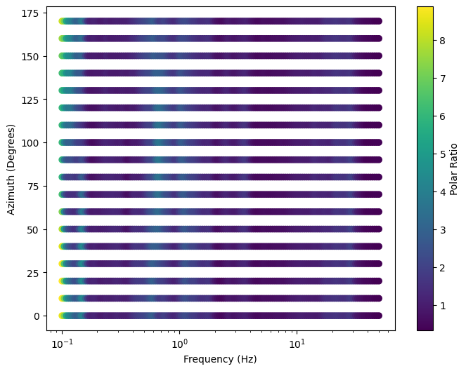
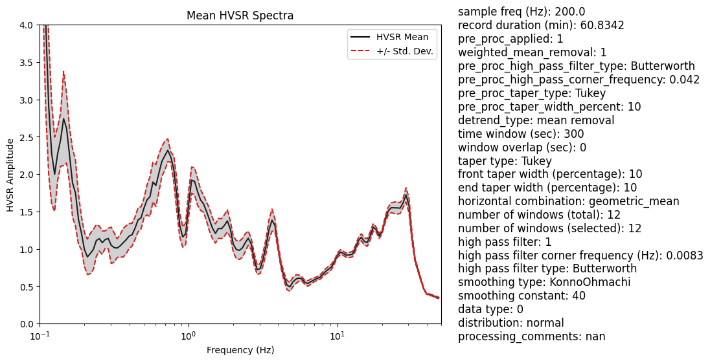
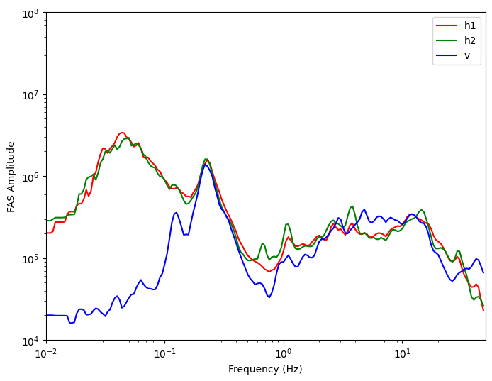

Example of hvsrprocpy Usage
Originally created: Apr. 28, 2024
# pip install -i https://test.pypi.org/simple/ hvsrprocpy
#Import the hvsrprocpy package from pypi
import hvsrprocpy as hv
#Print statement to see what are the functions and inputs within hvsrProc
# help(hv.hvsrfunctools.hvsr)
%%time
#Specify directory where .txt or .mseed files are stored
direc = r'C:\Users\Javier Ornelas\OneDrive\Documents\HVSRdata_Main\mHVSR Site Inv\VSPDB Data\CA Vertical Array Data\HVSRdata\2\2.250.2\Text_File_data\Raw_ascii_PEG_HH'
#Specify filenames of .mseed or .txt files
h1 = '20220907170054_NX_USC6_HHN.txt'
h2 = '20220907170058_NX_USC6_HHE.txt'
v = '20220907170100_NX_USC6_HHZ.txt'
#specify where you want output to be stored
output_dir = r'C:\Users\Javier Ornelas\OneDrive\Documents\HVSRdata_Main\mHVSR Site Inv\HVSR VSPDB Data'
h1, h2, v, dt, time = hv._hvhelper.process_time_series(h1_fn=h1, h2_fn=h2, v_fn=v, directory=direc,
file_type=2, time_cut=120)
#Use the main function hv_proc which processes time series and hvsr
win_result, fd_select = \
hv.hvsrfunctools.hvsr(h1=h1, h2 =h2, v=v, dt = dt, time_ts=time, output_dir=output_dir,
win_width=300, overlapping=0, plot_ts=True, plot_hvsr=True, output_polar_curves=False, norm_flag = False)
Pre-processing noise data is DONE!
Enter the index of the window to remove (Press q to quit): q
Time-domain selection is DONE!
Preparing for frequency-domain, please wait...
Enter the index of the curve to remove (press 'q' to quit): q
Frequency-domain selection is DONE!
Everything is DONE, check out the results in the output folder!
CPU times: total: 12 s
Wall time: 1min 15s
#Plot Polar Curve from output of hvsrProc
import pymysql, json
import os
import pandas as pd
#specify directory where polar curve data is stored
POLAR = pd.read_csv(os.path.join(output_dir,'Test_hvsr_polar.csv'))
#specify where json file of frequencies is stored
standard_freqs = json.load(open(r'C:\Users\Javier Ornelas\OneDrive\Documents\HVSRdata_Main\Site Response Modelling Inv\GMDB OSAKA INV\mean_curves/HVSR_VSPDB_standard_frequencies.json'))
#specify degree increment
deg_increment = 10
#Specify azimuth
AZIMUTHS = list(range(0, 180, deg_increment))
#Process polar curve data
processed_pol_data = hv.hvsrplot.process_polar_curve(polar_data = POLAR, azimuths = AZIMUTHS, standard_freqs = standard_freqs)
#Plot the polar curve
fig = hv.hvsrplot.plot_polar_ratio(processed_pol_data)
# fig.savefig(r'C:\Users\Javier Ornelas\OneDrive\Documents\HVSRdata_Main\mHVSR Site Inv\HVSR VSPDB Data/test.png', dpi =500)

#Specify directory where mean hvsr curve is stored
Mean_df = os.path.join(output_dir,'Test_hvsr_mean.csv')
#Specify directory where metadata is stored
metadata_csv_filepath = os.path.join(output_dir,'Test_metadata.csv')
#Plot the mean curve
fig = hv.hvsrplot.plot_mean_hvsr(csv_file_path=Mean_df, metadata_csv_path=metadata_csv_filepath, xlim_m = 65, ylim_m = 2,
xlim=(0.1, 50), ylim=(0,4), robust_est=False, metadata_flag=True)

#Plot selected and unselected time series from output of hvsrProc
#Specify directory where the time series is stored
ts_df = os.path.join(output_dir,'Test_ts_sel.csv')
#Plot the time series
fig = hv.hvsrplot.plot_selected_time_series(csv_file_path = ts_df)
# fig.savefig(r'C:\Users\Javier Ornelas\OneDrive\Documents\HVSRdata_Main\mHVSR Site Inv\HVSR VSPDB Data/test.png', dpi =500)

#Plot selected time series from output of hvsrProc
#Specify where the directory for the selected hvsr curves are located
sel_curve_dir = os.path.join(output_dir,'Test_hvsr_sel.csv')
#Plot the selected hvsr curves
fig = hv.hvsrplot.plot_selected_hvsr(sel_curve_dir,xlim=(0.1, 50), ylim=(0, 8))
# fig.savefig(r'C:\Users\Javier Ornelas\OneDrive\Documents\HVSRdata_Main\mHVSR Site Inv\HVSR VSPDB Data/test.png', dpi =500)

csv_path = os.path.join(output_dir,'Test_FAS_mean.csv')
fig = hv.hvsrplot.plot_fas(csv_path, xlim=(0.01, 50), ylim=(10e3, 10e7))
# fig.savefig(r'C:\Users\Javier Ornelas\OneDrive\Documents\HVSRdata_Main\mHVSR Site Inv\HVSR VSPDB Data/test.png', dpi =500)

#Example of using tools to process metadata for station xml files
# Example usage for multi site:
#Specify the static metadata
field_crew = None
user = 'francisco javier ornelas'
weather = None
ground_type = None
sensor_ground_coupling = None
monochromatic = None
building = None
transients = None
data_type = 0
sensor_corner_frequency = 0.0083
gain = 1
comments = None
#Specify the directory where the stations are stored
directory = r'C:\Users\Javier Ornelas\OneDrive\Documents\HVSRdata_Main\mHVSR Site Inv\10'
#Run the tool
df = hv.HvsrMetaTools.process_hvsr_metadata(field_crew, user, weather, ground_type, sensor_ground_coupling,
monochromatic, building, transients, data_type,
sensor_corner_frequency, gain, comments, directory)
#Save the dataframe (df) if needed
# df.to_csv(os.path.join(directory,'gmdb_query_metadata.csv'),header =True, index=False)
#Visualize the df
df
| name | longitude | latitude | elevation | start_date | end_date | start_time | end_time | field_crew | seismic_recorder | ... | building | transients | azimuth | user | comments | data_type | mass_position_w | mass_position_v | mass_position_u | mag_dec | |
|---|---|---|---|---|---|---|---|---|---|---|---|---|---|---|---|---|---|---|---|---|---|
| 0 | 10.0.0 | -118.178297 | 34.037050 | 83.7 | 2024-05-30 | None | 18:43:35.00000 | None | Pegasus Portable Digital Recorder PGS-140 | ... | None | None | 0 | francisco javier ornelas | None | 0 | None | None | None | None | |
| 1 | 10.250.1 | -118.175745 | 34.036540 | 120.7 | 2024-05-30 | 2024-05-30 | 17:01:35.00000 | 18:13:26.00000 | None | Pegasus Portable Digital Recorder PGS-140 | ... | None | None | 0 | francisco javier ornelas | None | 0 | None | None | None | None |
| 2 | 10.250.2 | -118.176393 | 34.038562 | 94.0 | 2024-05-30 | None | 20:04:07.00000 | None | Pegasus Portable Digital Recorder PGS-140 | ... | None | None | 0 | francisco javier ornelas | None | 0 | None | None | None | None | |
| 3 | 10.250.3 | -118.178783 | 34.034881 | 78.8 | 2024-05-30 | 2024-05-30 | 17:26:54.00000 | 18:42:16.00000 | None | Pegasus Portable Digital Recorder PGS-140 | ... | None | None | 0 | francisco javier ornelas | None | 0 | None | None | None | None |
| 4 | 10.250.4 | -118.180522 | 34.036645 | 104.5 | 2024-05-30 | 2024-05-30 | 17:22:35.00000 | 18:44:36.00000 | None | Pegasus Portable Digital Recorder PGS-140 | ... | None | None | 0 | francisco javier ornelas | None | 0 | None | None | None | None |
| 5 | 10.50.1 | -118.177850 | 34.037202 | 86.4 | 2024-05-30 | None | 18:49:51.00000 | None | Pegasus Portable Digital Recorder PGS-140 | ... | None | None | 0 | francisco javier ornelas | None | 0 | None | None | None | None | |
| 6 | 10.50.2 | -118.177863 | 34.036742 | 89.6 | 2024-05-30 | 2024-05-30 | 18:14:44.00000 | 19:27:07.00000 | None | Pegasus Portable Digital Recorder PGS-140 | ... | None | None | 0 | francisco javier ornelas | None | 0 | None | None | None | None |
| 7 | 10.50.4 | -118.178158 | 34.037463 | 92.2 | 2024-05-30 | None | 19:28:27.00000 | None | Pegasus Portable Digital Recorder PGS-140 | ... | None | None | 0 | francisco javier ornelas | None | 0 | None | None | None | None | |
| 8 | 10.500.1 | -118.177868 | 34.041472 | 94.8 | 2024-05-30 | 2024-05-30 | 18:45:54.00000 | 20:02:42.00000 | None | Pegasus Portable Digital Recorder PGS-140 | ... | None | None | 0 | francisco javier ornelas | None | 0 | None | None | None | None |
| 9 | 10.500.2 | -118.183667 | 34.036168 | 103.1 | 2024-05-30 | 2024-05-30 | 16:06:20.00000 | 17:21:32.00000 | None | Pegasus Portable Digital Recorder PGS-140 | ... | None | None | 0 | francisco javier ornelas | None | 0 | None | None | None | None |
| 10 | 10.500.3 | -118.180107 | 34.032753 | 75.6 | 2024-05-30 | 2024-05-30 | 16:01:52.00000 | 17:25:25.00000 | None | Pegasus Portable Digital Recorder PGS-140 | ... | None | None | 0 | francisco javier ornelas | None | 0 | None | None | None | None |
| 11 | 10.500.4 | -118.172808 | 34.037084 | 100.2 | 2024-05-29 | 2024-05-30 | 06:57:12.00000 | 17:00:33.00000 | None | Pegasus Portable Digital Recorder PGS-140 | ... | None | None | 0 | francisco javier ornelas | None | 0 | None | None | None | None |
12 rows × 31 columns
#Example of using a tool to combine all metadata files
#Specify the folder path where the stations are stored
folder_path = r'C:\Users\Javier Ornelas\OneDrive\Documents\HVSRdata_Main\mHVSR Site Inv\10'
#Specify a unique set of folders thats contained in all station folders
add_sim_path = 'Text_File_data/Raw_mseed_PEG_HH'
#Run the metadata tool
combined_metadata = hv.HvsrMetaTools.combine_metadata(folder_path,add_sim_path)
#Visualize the dataframe (combined_metadata)
combined_metadata
| name | sample freq (Hz) | record duration (min) | pre_proc_applied | weighted_mean_removal | pre_proc_high_pass_filter_type | pre_proc_high_pass_corner_frequency | pre_proc_taper_type | pre_proc_taper_width_percent | detrend_type | ... | number of windows (total) | number of windows (selected) | high pass filter | high pass filter corner frequency (Hz) | high pass filter type | smoothing type | smoothing constant | data type | distribution | processing_comments | |
|---|---|---|---|---|---|---|---|---|---|---|---|---|---|---|---|---|---|---|---|---|---|
| 0 | 10.0.0 | 200.0 | 69.5918 | 1 | 1 | Butterworth | 0.042 | Tukey | 10 | mean removal | ... | 13 | 13 | 1 | 0.0083 | Butterworth | KonnoOhmachi | 20 | 0 | normal | NaN |
| 1 | 10.250.1 | 200.0 | 55.9685 | 1 | 1 | Butterworth | 0.042 | Tukey | 10 | mean removal | ... | 11 | 11 | 1 | 0.0083 | Butterworth | KonnoOhmachi | 20 | 0 | normal | NaN |
| 2 | 10.250.2 | 200.0 | 40.8580 | 1 | 1 | Butterworth | 0.042 | Tukey | 10 | mean removal | ... | 8 | 8 | 1 | 0.0083 | Butterworth | KonnoOhmachi | 20 | 0 | normal | NaN |
| 3 | 10.250.3 | 200.0 | 57.9887 | 1 | 1 | Butterworth | 0.042 | Tukey | 10 | mean removal | ... | 11 | 11 | 1 | 0.0083 | Butterworth | KonnoOhmachi | 20 | 0 | normal | NaN |
| 4 | 10.250.4 | 200.0 | 56.3427 | 1 | 1 | Butterworth | 0.042 | Tukey | 10 | mean removal | ... | 11 | 11 | 1 | 0.0083 | Butterworth | KonnoOhmachi | 20 | 0 | normal | NaN |
| 5 | 10.50.1 | 200.0 | 57.0213 | 1 | 1 | Butterworth | 0.042 | Tukey | 10 | mean removal | ... | 11 | 11 | 1 | 0.0083 | Butterworth | KonnoOhmachi | 20 | 0 | normal | NaN |
| 6 | 10.50.2 | 200.0 | 58.4673 | 1 | 1 | Butterworth | 0.042 | Tukey | 10 | mean removal | ... | 11 | 11 | 1 | 0.0083 | Butterworth | KonnoOhmachi | 20 | 0 | normal | NaN |
| 7 | 10.50.4 | 200.0 | 58.5172 | 1 | 1 | Butterworth | 0.042 | Tukey | 10 | mean removal | ... | 11 | 11 | 1 | 0.0083 | Butterworth | KonnoOhmachi | 20 | 0 | normal | NaN |
| 8 | 10.500.1 | 200.0 | 55.7752 | 1 | 1 | Butterworth | 0.042 | Tukey | 10 | mean removal | ... | 11 | 11 | 1 | 0.0083 | Butterworth | KonnoOhmachi | 20 | 0 | normal | NaN |
| 9 | 10.500.2 | 200.0 | 56.0643 | 1 | 1 | Butterworth | 0.042 | Tukey | 10 | mean removal | ... | 11 | 11 | 1 | 0.0083 | Butterworth | KonnoOhmachi | 20 | 0 | normal | NaN |
| 10 | 10.500.3 | 200.0 | 58.6710 | 1 | 1 | Butterworth | 0.042 | Tukey | 10 | mean removal | ... | 11 | 10 | 1 | 0.0083 | Butterworth | KonnoOhmachi | 20 | 0 | normal | NaN |
| 11 | 10.500.4 | 200.0 | 54.5717 | 1 | 1 | Butterworth | 0.042 | Tukey | 10 | mean removal | ... | 10 | 10 | 1 | 0.0083 | Butterworth | KonnoOhmachi | 20 | 0 | normal | NaN |
12 rows × 26 columns